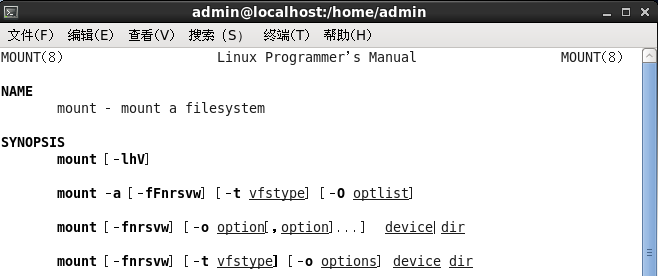

mount之旅
在上面介绍了VFS的总体框架之后，并且系统已经支持了一个文件系统类型之后，我们如何使用这个文件系统类型呢？这就是本章要介绍的mount。通过将一个文件系统mount到系统的一个节点上，我们就可以访问这个文件系统了。那么为什么我们一个mount命令之后就可以访问这个文件系统了呢？ 一起开始mount之旅，看看这个过程究竟发生了什么。
mount命令
mount一个文件类型，通常使用的是如下格式命令：
mount -t type -o option,option dev dir

更多的可以man mount查看。
mount系统调用
Linux用户态和内核态的一个主要接口就是系统调用。mount命令通过mount系统调用进入内核。我们就开始从这个系统调用入手，看看内核的具体工作。
可以使用man 2 mount命令查看glibc的mount接口：
`
NAME
mount - mount file system
SYNOPSIS
#include
int mount(const char *source, const char *target,
const char *filesystemtype, unsigned long mountflags,
const void *data);
前面参数比较好理解，重点说一下data参数，man手册解释如下：The data argument is interpreted by the different file systems. Typically it is a string of comma-separated options understood by this file system.`
内核入口定义在fs/namespace.c文件中：
SYSCALL_DEFINE5(mount, char __user *, dev_name, char __user *, dir_name,
char __user *, type, unsigned long, flags, void __user *, data)
{
return ksys_mount(dev_name, dir_name, type, flags, data);
}
其中ksys_mount主要是对入参进行检测，具体如下：
int ksys_mount(char __user *dev_name, char __user *dir_name, char __user *type,
unsigned long flags, void __user *data)
{
int ret;
char *kernel_type;
char *kernel_dev;
void *options;
kernel_type = copy_mount_string(type);
ret = PTR_ERR(kernel_type);
if (IS_ERR(kernel_type))
goto out_type;
kernel_dev = copy_mount_string(dev_name);
ret = PTR_ERR(kernel_dev);
if (IS_ERR(kernel_dev))
goto out_dev;
options = copy_mount_options(data);
ret = PTR_ERR(options);
if (IS_ERR(options))
goto out_data;
ret = do_mount(kernel_dev, dir_name, kernel_type, flags, options);
kfree(options);
out_data:
kfree(kernel_dev);
out_dev:
kfree(kernel_type);
out_type:
return ret;
}
其中，对字符串的处理使用了copy_mount_strings，其实现如下：
char *copy_mount_string(const void __user *data)
{
return data ? strndup_user(data, PAGE_SIZE) : NULL; --- 字符串长度不能超过PAGE_SIZE，即一个页的长度；
}
接下来，就是最重要的真正干活儿的do_mount函数：
/*
* Flags is a 32-bit value that allows up to 31 non-fs dependent flags to
* be given to the mount() call (ie: read-only, no-dev, no-suid etc).
*
* data is a (void *) that can point to any structure up to
* PAGE_SIZE-1 bytes, which can contain arbitrary fs-dependent
* information (or be NULL).
*
* Pre-0.97 versions of mount() didn't have a flags word.
* When the flags word was introduced its top half was required
* to have the magic value 0xC0ED, and this remained so until 2.4.0-test9.
* Therefore, if this magic number is present, it carries no information
* and must be discarded.
*/
long do_mount(const char *dev_name, const char __user *dir_name,
const char *type_page, unsigned long flags, void *data_page)
{
struct path path;
unsigned int mnt_flags = 0, sb_flags;
int retval = 0;
/* Discard magic */
if ((flags & MS_MGC_MSK) == MS_MGC_VAL)
flags &= ~MS_MGC_MSK; --- 参见函数头注释，忽略魔术字
/* Basic sanity checks */
if (data_page)
((char *)data_page)[PAGE_SIZE - 1] = 0; /**/ 确保data_page不越界
if (flags & MS_NOUSER)
return -EINVAL;
/* ... and get the mountpoint */
retval = user_path(dir_name, &path); /*获取对应的mount点，用path结构体标识*/
if (retval)
return retval;
retval = security_sb_mount(dev_name, &path,
type_page, flags, data_page);
if (!retval && !may_mount())
retval = -EPERM;
if (!retval && (flags & SB_MANDLOCK) && !may_mandlock())
retval = -EPERM;
if (retval)
goto dput_out;
/* Default to relatime unless overriden */
if (!(flags & MS_NOATIME))
mnt_flags |= MNT_RELATIME;
/* Separate the per-mountpoint flags */
if (flags & MS_NOSUID)
mnt_flags |= MNT_NOSUID;
if (flags & MS_NODEV)
mnt_flags |= MNT_NODEV;
if (flags & MS_NOEXEC)
mnt_flags |= MNT_NOEXEC;
if (flags & MS_NOATIME)
mnt_flags |= MNT_NOATIME;
if (flags & MS_NODIRATIME)
mnt_flags |= MNT_NODIRATIME;
if (flags & MS_STRICTATIME)
mnt_flags &= ~(MNT_RELATIME | MNT_NOATIME);
if (flags & MS_RDONLY)
mnt_flags |= MNT_READONLY;
/* The default atime for remount is preservation */
if ((flags & MS_REMOUNT) &&
((flags & (MS_NOATIME | MS_NODIRATIME | MS_RELATIME |
MS_STRICTATIME)) == 0)) {
mnt_flags &= ~MNT_ATIME_MASK;
mnt_flags |= path.mnt->mnt_flags & MNT_ATIME_MASK;
}
sb_flags = flags & (SB_RDONLY |
SB_SYNCHRONOUS |
SB_MANDLOCK |
SB_DIRSYNC |
SB_SILENT |
SB_POSIXACL |
SB_LAZYTIME |
SB_I_VERSION);
if (flags & MS_REMOUNT) /*修改已经mount的目录的mount选项*/
retval = do_remount(&path, flags, sb_flags, mnt_flags,
data_page);
else if (flags & MS_BIND) /*支持mount --bind*/
retval = do_loopback(&path, dev_name, flags & MS_REC);
else if (flags & (MS_SHARED | MS_PRIVATE | MS_SLAVE | MS_UNBINDABLE))
retval = do_change_type(&path, flags);
else if (flags & MS_MOVE) /*支持将mount点从dev_name移动到path目录，操作是原子的*/
retval = do_move_mount(&path, dev_name);
else /*最通用的mount流程*/
retval = do_new_mount(&path, type_page, sb_flags, mnt_flags,
dev_name, data_page);
dput_out:
path_put(&path);
return retval;
}
从上面代码可以看到，mount的选项支持丰富，大部分情况都是对flag的处理，真正的一般意义上的mount，只有最后的do_new_mount；
/*
* create a new mount for userspace and request it to be added into the
* namespace's tree
*/
static int do_new_mount(struct path *path, const char *fstype, int sb_flags,
int mnt_flags, const char *name, void *data)
{
struct file_system_type *type;
struct vfsmount *mnt;
int err;
if (!fstype)
return -EINVAL;
type = get_fs_type(fstype);
if (!type)
return -ENODEV;
mnt = vfs_kern_mount(type, sb_flags, name, data); /*分配vfsmount结构体并初始化*/
if (!IS_ERR(mnt) && (type->fs_flags & FS_HAS_SUBTYPE) &&
!mnt->mnt_sb->s_subtype)
mnt = fs_set_subtype(mnt, fstype);
put_filesystem(type);
if (IS_ERR(mnt))
return PTR_ERR(mnt);
if (mount_too_revealing(mnt, &mnt_flags)) {
mntput(mnt);
return -EPERM;
}
err = do_add_mount(real_mount(mnt), path, mnt_flags); /*添加到namespace*/
if (err)
mntput(mnt);
return err;
}
do_new_mount函数作用在函数头的注释已经解释的非常清楚：1、创建一个新的mount；2、将新请求添加到namespace的树上，这样后续就能访问到这个mount目录了；
在这里感叹一下，这个注释是一个非常好的注释示范，不是将函数中的具体事情一件件罗列，而是阐述清楚这个函数的目的是什么。
/*
* add a mount into a namespace's mount tree
*/
static int do_add_mount(struct mount *newmnt, struct path *path, int mnt_flags)
{
struct mountpoint *mp;
struct mount *parent;
int err;
mnt_flags &= ~MNT_INTERNAL_FLAGS;
mp = lock_mount(path);
if (IS_ERR(mp))
return PTR_ERR(mp);
parent = real_mount(path->mnt);
err = -EINVAL;
if (unlikely(!check_mnt(parent))) {
/* that's acceptable only for automounts done in private ns */
if (!(mnt_flags & MNT_SHRINKABLE))
goto unlock;
/* ... and for those we'd better have mountpoint still alive */
if (!parent->mnt_ns)
goto unlock;
}
/* Refuse the same filesystem on the same mount point */
err = -EBUSY;
if (path->mnt->mnt_sb == newmnt->mnt.mnt_sb &&
path->mnt->mnt_root == path->dentry)
goto unlock;
err = -EINVAL;
if (d_is_symlink(newmnt->mnt.mnt_root))
goto unlock;
newmnt->mnt.mnt_flags = mnt_flags;
err = graft_tree(newmnt, parent, mp);
unlock:
unlock_mount(mp);
return err;
}